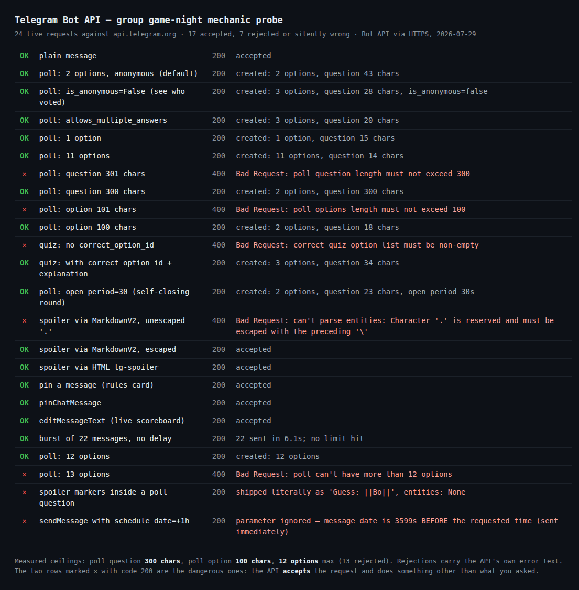

How to Run a Telegram Game Night in a Group Chat
Every article about Telegram games answers the same question: which games. Truth or Dare, Never Have I Ever, Would You Rather, Most Likely To. Fine: that part is easy, and I've written one of those lists myself.
Nobody writes about the part that actually decides whether your game night survives past round three: the chat mechanics. A group chat is not a living room. Nobody takes turns. The person who types fastest answers first and quietly sets the answer everyone else copies. Half the group is reading on a phone under a table. The host, meaning you, is trying to run a game in a medium that has no concept of "whose turn it is".
Telegram has real tools for this: polls, quiz polls, spoiler text, pinned messages, self-closing rounds. Most of what's written about them is copied from other articles, and a fair amount of it is simply out of date. So rather than trust it, I sent 24 live requests to Telegram's own API: real polls, real spoilers, real pins, and I wrote down exactly what came back.
Seven of the 24 failed. Two of them "succeeded" while doing something other than what I asked, which is worse, because those are the two you ship to your friends without noticing.
How I tested it
I run a party game on Telegram, so the questions weren't hypothetical: I wanted to know which of these mechanics I could rely on when a group of eight people is mid-round and impatient.
The method was deliberately boring. Each mechanic became one request to Telegram's Bot API, using sendPoll, sendMessage and pinChatMessage, with one variable changed at a time: a poll question at 300 characters and then at 301, an option at 100 and then at 101, a quiz with a correct answer and then without one. Whatever the API returned, success or error, went straight into a results file. The screenshot below is generated from that file, not typed by hand.

One thing I could not test, and won't pretend otherwise: the per-group rate limit. My test account is restricted from creating new groups, so the requests went to a one-to-one chat with my bot, where 22 back-to-back messages went through in 6.1 seconds without a single block. That number does not transfer to a group. Telegram's own bot FAQ puts the guidance at roughly 20 messages per minute in the same group, and everything I say about pacing below follows their figure, not mine.
The five things that break a round
1. The 100-character option cap hits the exact game you most want to poll
A poll question can be 300 characters. Each option can only be 100. I got poll options length must not exceed 100 at 101 characters, and success at exactly 100.
That sounds generous until you look at what you're actually pasting. I ran all 255 prompts from my own game pack through those two limits. Zero exceeded the question cap. Twenty exceeded the option cap, and 19 of those 20 were Would You Rather.
Which makes sense once you see it. A Would You Rather line is already a question plus its two answers glued together: "Would you rather have unlimited money but no free time, or unlimited free time but just enough money?" runs to 138 characters. Paste that whole line as an option and Telegram rejects it. Would You Rather is the game that maps most naturally onto a poll, and it's the one whose text most reliably breaks the poll.
The fix is a split, not an edit. The dilemma goes in the poll question (300 characters, so it always fits; my longest was 101). The two halves become the two options: "Money, no time" / "Time, no money". When I re-ran the same 30 Would You Rather prompts that way, all 30 fit, without cutting a single word.
2. The option limit is 12, not the 10 you'll read everywhere
Twelve options were accepted and created normally. Thirteen came back poll can't have more than 12 options. A lot of current advice still says ten, which was true of an earlier version of the API and quietly stopped being true.
This matters for exactly one thing, and it's the most popular game in the genre: Most Likely To. You want one option per player, so the group can vote for each other. Twelve options means a group of up to twelve fits in a single poll. At thirteen people you either split the vote across two polls, which fractures it, or drop the poll and take answers as replies.
3. Quiz mode demands a right answer, so it's wrong for opinion games
A quiz poll without a designated correct option is rejected: correct quiz option list must be non-empty. With one, it works, and you can attach an explanation that pops up after the vote.
So quiz mode is for trivia, where there genuinely is a correct answer, and the explanation slot is the best feature nobody uses: it lets the poll teach instead of just scoring. For anything with no right answer (Would You Rather, Most Likely To, Never Have I Ever) you want a regular poll. Reach for quiz mode there and Telegram forces you to declare one of your friends' opinions officially correct.
4. Polls are anonymous by default, which silently kills Most Likely To
Anonymity is the default, and that default is exactly backwards for half these games.
Never Have I Ever wants anonymity. People answer honestly precisely because nobody sees who tapped "I have". Most Likely To wants the opposite: the accusation is the game. "Most likely to reply at 3am: Ann, Bo, Cy" is only funny if you can see that four people voted for Bo. Run it anonymously and you get a bar chart, which nobody laughs at.
Turning anonymity off is one toggle when you create the poll, and it's the single highest-value decision in the whole session. My rule: confessions anonymous, accusations public.
5. Two requests that succeed while doing the wrong thing
These are the two red rows carrying code 200, and they're the reason I ran this test at all. An outright rejection you notice immediately, a silent substitution you ship.
Spoiler formatting is ignored inside a poll question. Telegram introduced spoiler text in 2021, and it's the mechanic that finally makes hidden-answer games work in a chat: the answer sits there covered until someone taps it. Write a poll question as Guess: ||Bo|| expecting the name to be hidden, and the API returns success, then delivers the question with the pipes visible as ordinary characters. The answer isn't hidden. It's printed, in a slightly uglier font, to everyone.
Spoilers only work in ordinary messages. So the pattern is two messages, not one: poll first, reveal second, spoiler applied to the reveal.
Bots cannot schedule anything. I sent a message with a scheduling timestamp one hour in the future. The API said success and delivered it instantly. My "scheduled" message arrived 3,599 seconds before its own schedule. There is no scheduling parameter for bots; the API just ignores what it doesn't recognise instead of telling you.
Scheduling does exist, in the Telegram app, on your side: compose the message, hold the send button, pick a time. That's how you have the rules card land in the group at 20:00 without being awake for it. It is not something you can automate through a bot, and if a tool promises you that, it is doing something else.
Two mechanics worth adding on purpose
Self-closing rounds. A poll can carry an open period. I set 30 seconds and it was created with a 30-second life. This is the closest Telegram gets to a turn timer. It ends the round for you, so the game doesn't die of one person "answering later", and it applies pressure that makes answers funnier.
Pin the rules, then edit the pin. Pinning worked, and so did editing the text of an already-sent message. Together those are a live scoreboard: pin one message at the start, edit it as the night goes, and anyone arriving late reads the current state instead of scrolling. Editing a pin doesn't re-notify the group, so it's cheap to update often.
One thing the API will not do is protect you from a broken round. A poll with a single option was accepted without complaint: a poll nobody can meaningfully vote in, delivered with a cheerful success code. Telegram checks lengths and counts. It does not check whether your game makes sense.
The host protocol this adds up to
Strip out the API detail and what's left is a short list of things a host does, all of which exist because the medium has no turns:
- Name one host per session. Not a rotation, not a democracy. One person sends the prompts and closes the rounds, because otherwise two people post round four simultaneously and the thread splits.
- Pin the rules, including the pace. "One round every ten minutes, replies by reply-thread." Half the failures aren't disagreement, they're people guessing at the tempo.
- Poll first, talk second. A poll captures everyone's answer before the loudest voice anchors it. In an open-text round the first reply becomes the template for every reply after it.
- Two passes each, then the round closes. The single rule that keeps quiet people in the game. It caps the extroverts without singling anyone out.
- Space the sends. Around 20 messages per minute to one group, per Telegram's guidance. Twelve prompts fired back to back is also just unreadable.
- Spoiler the reveals. Separate message, spoiler applied there, never in the poll question.
None of this is clever. It's just the set of things that turn out to be load-bearing once you stop assuming a group chat behaves like a room.
Try the free game first
Truth or Dare, Never Have I Ever and Would You Rather, with 151 questions per language, English and Ukrainian, no signup and no backend that can be switched off. Open it in the chat and start a round.
Open the Party Game No Telegram? It runs in a browser too: charliemorrison.dev/party-gameWant the rounds already built for polls?
The Telegram Party Pack is the version of this with the work done: 255 prompts across six games, each written to fit inside Telegram's limits, plus poll-ready files where the Would You Rather dilemmas are already split into question and options, the exact split this test says you need. Includes the host guide: pinned rules, pacing, spoiler reveals and keeping a round legible when replies arrive out of order.
Get the pack — $9.99 The game above stays free, no signup. See what's in the pack before you buy.FAQ
How many options can a Telegram poll have?
Twelve. Tested directly: 12 options were created normally, 13 came back poll can't have more than 12 options. Plenty of guides still say ten, which was true of an older API version. The question is capped at 300 characters and each option at 100.
Why can't I see who voted in my Telegram poll?
Because polls are anonymous unless you say otherwise, and most people never change it. For accusation games like Most Likely To that's fatal, because seeing who picked whom is the game. Turn anonymity off for those, leave it on for confession-style rounds where hiding the vote is what makes people honest.
Can I schedule game-night messages from a bot?
No. The Bot API has no scheduling parameter and doesn't complain if you invent one. My message with a timestamp an hour ahead was delivered immediately with a success code. Scheduling lives in the Telegram apps: compose, hold send, pick a time.
Do spoiler tags work inside a poll question?
No. Formatting is ignored in poll questions, so ||spoiler|| arrives with the pipes visible and nothing hidden. Send the poll, then reveal the answer in a separate message with the spoiler applied there.
Which games work best as polls, and which as plain messages?
Polls suit anything with fixed choices: Would You Rather (split into question and options), Most Likely To (one option per player, up to twelve), Never Have I Ever (two options, kept anonymous). Plain messages suit anything open-ended, such as Truth or Dare, Story Chain and Paranoia, where the answer is written, not chosen, and the spoiler reveal does the work.
Related reading
- Telegram's poll limits, tested — the hard walls behind every poll round here: 12 options, 100 characters, and timers that round themselves.
- Best Telegram party games and bots in 2026: which games to play, if you're still choosing.
- I messaged 18 "best" Telegram game bots — 7 never replied: why I stopped recommending bots you can't verify.
- The Telegram tech quiz game: quiz mode used the way this test says it should be.